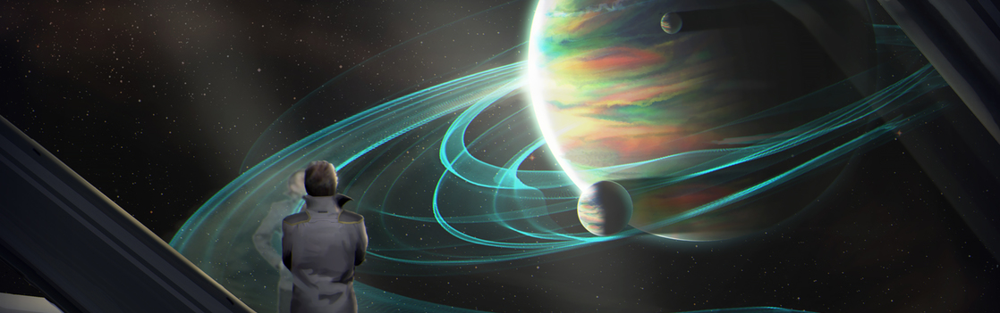

SYSTEM: RHETOR

Excurs - System: Rhetor
Das Rhetor System ist gleichzeitig eines der ältesten und eines der jüngsten Systeme der UEE. Eines der ältesten wegen seines Platzes in der Expansionsgeschichte der Menschheit. Rhetor wurde 2387 zum ersten Mal besucht, das macht es zu einem der ersten Systeme, die die Menschheit entdeckt hat. Dennoch halten es die meisten für ein jugendliches System, da es das Herz des öffentlichen und privaten Universitätssystems in der UEE darstellt. Rhetor bleibt, egal wie man es dreht und wendet, ein wichtiger Teil der Menschheitsgeschichte und ein Schlüsselfaktor für ihre Zukunft.
Rhetor wurde von Leona Sono und Neil Nyemeto, zwei ambitionierten Doktoranden des Marsianischen Instituts für Raumfahrt und Technologie entdeckt. Sono, eine Ingenieursstudentin und erfahrene Pilotin, wollte die Genauigkeit ihrer Atomnavigationsuhr ihres Schiffes testen, während sie den Sol-Croshaw-Sprungpunkt durchquerte. Nyemeto, ein Astrophysikstudent, begleitete Sono, um Daten aus dem Plasma in Croshaw sammeln zu können. Als sie sich auf den Rückflug vorbereiteten, meldete eine von Nyemetos Forschungsdrohnen eine ungewöhnliche Datenfolge zurück. Das Duo untersuchte die Position, an dem die Daten aufgezeichnet wurden, ohne zu erwarten, dass sie die Koordinaten direkt zu dem Croshaw-Rhetor Sprungpunkt führen würden.
Nach Rückkehr an ihr Institut teilten sie ihre Entdeckung mit der Präsidentin der Schule, Adrianne Zemlock, einer früheren Politikerin, die heftig kritisierte hatte, wie sich die Menschheit im Croshaw System ausgebreitet hatte. Zemlock befürchtete, dass, wenn private Firmen zu viel Einfluss auf die planetare Entwicklung haben, diese nur mit dem Gedanken an Profit aufgebaut würden und die Bedürfnisse der Menschheit erst an zweiter Stelle kämen. Wie sagte Zemlock einst: „Die Menschheit hat realisiert, dass man die Sterne leicht erreichen kann. Der schwierige Teil ist es, herauszufinden, was man mit ihnen anstellen sollte. Ich frage euch also – welche Art Universum sollen wir erschaffen?“
Mit dieser Frage im Hinterkopf informierten Zemlock, Sono und Nyemeto die erst kürzlich gegründeten UNE über den Sprungpunkt. Sie weigerten sich jedoch, dessen Koordinaten ohne die Zusicherung preiszugeben, dass ein Viertel der Oberfläche auf allen bewohnbaren und terraformten Planeten in dem System für Bildungszwecke reserviert wird. Sich Unternehmensinteressen zu widersetzen, war zwar schwierig, aber die Bildungsgemeinschaft unterstützte dieses Vorhaben.
Zemlock wurde zu einer festen Größe im Spectrum, in dem sie die Notwendigkeit für eine „verantwortungsvolle Expansion“ immer wieder leidenschaftlich verteidigte. Der öffentliche Druck, private und öffentliche Interessen zu vereinbaren, stieg und die UNE stimmte ihren Bedingungen schlussendlich zu. Sie entschieden sich sogar dazu, das System Rhetor zu nennen, die Bezeichnung für einen Meister und Lehrer der Redekunst und Zemlocks beliebter Spitzname, um daran zu erinnern, dass „Worte die Macht haben, Welten zu formen“.
Während der Erkundung des Systems fand die UNE fünf Planeten, drei davon erdähnliche Welten, die in der großen bewohnbaren Zone des Sterns lagen und die es wert waren, terraformt zu werden. Auf Rhetor II (Persei) wurden außerdem reiche Vorkommen an Neodym, Erbium, Samarium und weitere seltenen Elementen entdeckt.
Die UNE versteigerte die Bergbaurechte für den gesamten Planeten und verwendete die daraus erhaltenen Erträge, um das Terraforming von Reisse (Rhetor III) und Mentor (Rhetor IV) zu finanzieren. Um ihrer ursprünglichen Vereinbarung treu zu bleiben, reservierte die UNE Land auf Persei, um dort eine staatlich finanzierte Universitäten zu errichten, während sie Unternehmen Anreize boten, den Planten für ihre Forschungen und Denkfabriken in Betracht zu ziehen. Obwohl es Zemlocks Vorstellungen einer Bildungsoase nicht gänzlich entsprach, wurde Persei ein Inkubator für richtungsgebende Ideen und technologische Entwicklungen. Die beiden weiteren bewohnbaren Planeten Rhetors entwickelten zu Bollwerken der Universitätsbildung. Studenten und Universitätspersonal stellen sowohl auf Reisse als auch auf Mentor heute die Mehrheit der Bevölkerung. Ein Abschluss an einer dieser Universitäten wird als Überholspur für Arbeitsstellen auf der Erde oder Terra gesehen, der Bewerbungsprozess, um an einer der Schulen im System angenommen zu werden, ist dementsprechend hart umkämpft.
Viele Historiker haben sich schon gefragt, welches Schicksal Rhetor ereilt hätte, wenn Zemlock, Sono und Nyemeto nicht darauf bestanden hätten, Bildung an erste Stelle zu setzen. Perseis seltene Minerale brachten dem System nur ein paar Jahrhunderte großen Reichtum ein, wohingegen Rhetors Bildungsstruktur der Menschheit noch immer neue Perspektiven, Ideen und Technologien beschert. Aus diesem Grund halten viele Rhetor für eines der lebendigsten Systeme des Imperiums.
Nachdem alle Ressourcen abgebaut waren, erlangte Persei Ansehen bei den intellektuellen und wissenschaftlichen Gemeinschaften. Zahlreiche Forschungsunternehmen und privat finanzierte Ideenfabriken haben auf Persei ihren Hauptsitz. Es war jedoch die Arbeit der staatlich finanzierten Universität von Persei für analytische Forschung und Quantifizierung, die dafür berühmt wurde, die wissenschaftlichen Grenzen zu sprengen. Obwohl die meisten Forschungen geheim sind, sind der energieeffiziente Quantum Drive und das verbesserte hitzebeständige Gewebe für Raumanzüge nur einige der Fortschritte, die ihren Ursprung auf Persei haben sollen. Aufgrund der sensiblen Beschaffenheit dieser Forschungen wurde der Zugang zu dem Planeten stark eingeschränkt.
Des Weiteren ist Mentor die Heimat einer der Schatzkammern für universelle Samen. Dieser gesicherte Ort enthält angeblich Samen für jede einzelne Pflanze in der UEE. Der genaue Standort der Schatzkammer ist ein streng gehütetes Geheimnis. Die auf dem Planten erhöhte Militärpräsenz hält sich aber für gewöhnlich von den Universitäten fern. Rhetor V Die Atmosphäre dieser wunderschönen chromatischen Gasgiganten besteht aus fortwährenden Wirbelstürmen. Dieser hypnotisierende Anblick wird zugleich von Touristen, vorbeifliegenden Piloten als auch Studenten mit einer Vorliebe für halluzinogen Substanzen bewundert.

„Bildung, Ehre, Empathie. Das sind die zentralen Werte, welche die Universität von Reisse von ihren Studenten einfordert. Nach vier Jahren jedoch, die ich nun an der Universität bin, beschreiben eher folgende Worte meine Erfahrung: Politik, Proteste und Parteien. Was kann ich sagen? Es war die beste Zeit meines Lebens.“ – Alex Boboltz, Tagebuch eines Reisse Revolutionärs, 2731
Rhetor wurde von Leona Sono und Neil Nyemeto, zwei ambitionierten Doktoranden des Marsianischen Instituts für Raumfahrt und Technologie entdeckt. Sono, eine Ingenieursstudentin und erfahrene Pilotin, wollte die Genauigkeit ihrer Atomnavigationsuhr ihres Schiffes testen, während sie den Sol-Croshaw-Sprungpunkt durchquerte. Nyemeto, ein Astrophysikstudent, begleitete Sono, um Daten aus dem Plasma in Croshaw sammeln zu können. Als sie sich auf den Rückflug vorbereiteten, meldete eine von Nyemetos Forschungsdrohnen eine ungewöhnliche Datenfolge zurück. Das Duo untersuchte die Position, an dem die Daten aufgezeichnet wurden, ohne zu erwarten, dass sie die Koordinaten direkt zu dem Croshaw-Rhetor Sprungpunkt führen würden.
Nach Rückkehr an ihr Institut teilten sie ihre Entdeckung mit der Präsidentin der Schule, Adrianne Zemlock, einer früheren Politikerin, die heftig kritisierte hatte, wie sich die Menschheit im Croshaw System ausgebreitet hatte. Zemlock befürchtete, dass, wenn private Firmen zu viel Einfluss auf die planetare Entwicklung haben, diese nur mit dem Gedanken an Profit aufgebaut würden und die Bedürfnisse der Menschheit erst an zweiter Stelle kämen. Wie sagte Zemlock einst: „Die Menschheit hat realisiert, dass man die Sterne leicht erreichen kann. Der schwierige Teil ist es, herauszufinden, was man mit ihnen anstellen sollte. Ich frage euch also – welche Art Universum sollen wir erschaffen?“
Mit dieser Frage im Hinterkopf informierten Zemlock, Sono und Nyemeto die erst kürzlich gegründeten UNE über den Sprungpunkt. Sie weigerten sich jedoch, dessen Koordinaten ohne die Zusicherung preiszugeben, dass ein Viertel der Oberfläche auf allen bewohnbaren und terraformten Planeten in dem System für Bildungszwecke reserviert wird. Sich Unternehmensinteressen zu widersetzen, war zwar schwierig, aber die Bildungsgemeinschaft unterstützte dieses Vorhaben.
Zemlock wurde zu einer festen Größe im Spectrum, in dem sie die Notwendigkeit für eine „verantwortungsvolle Expansion“ immer wieder leidenschaftlich verteidigte. Der öffentliche Druck, private und öffentliche Interessen zu vereinbaren, stieg und die UNE stimmte ihren Bedingungen schlussendlich zu. Sie entschieden sich sogar dazu, das System Rhetor zu nennen, die Bezeichnung für einen Meister und Lehrer der Redekunst und Zemlocks beliebter Spitzname, um daran zu erinnern, dass „Worte die Macht haben, Welten zu formen“.
Während der Erkundung des Systems fand die UNE fünf Planeten, drei davon erdähnliche Welten, die in der großen bewohnbaren Zone des Sterns lagen und die es wert waren, terraformt zu werden. Auf Rhetor II (Persei) wurden außerdem reiche Vorkommen an Neodym, Erbium, Samarium und weitere seltenen Elementen entdeckt.
Die UNE versteigerte die Bergbaurechte für den gesamten Planeten und verwendete die daraus erhaltenen Erträge, um das Terraforming von Reisse (Rhetor III) und Mentor (Rhetor IV) zu finanzieren. Um ihrer ursprünglichen Vereinbarung treu zu bleiben, reservierte die UNE Land auf Persei, um dort eine staatlich finanzierte Universitäten zu errichten, während sie Unternehmen Anreize boten, den Planten für ihre Forschungen und Denkfabriken in Betracht zu ziehen. Obwohl es Zemlocks Vorstellungen einer Bildungsoase nicht gänzlich entsprach, wurde Persei ein Inkubator für richtungsgebende Ideen und technologische Entwicklungen. Die beiden weiteren bewohnbaren Planeten Rhetors entwickelten zu Bollwerken der Universitätsbildung. Studenten und Universitätspersonal stellen sowohl auf Reisse als auch auf Mentor heute die Mehrheit der Bevölkerung. Ein Abschluss an einer dieser Universitäten wird als Überholspur für Arbeitsstellen auf der Erde oder Terra gesehen, der Bewerbungsprozess, um an einer der Schulen im System angenommen zu werden, ist dementsprechend hart umkämpft.
Viele Historiker haben sich schon gefragt, welches Schicksal Rhetor ereilt hätte, wenn Zemlock, Sono und Nyemeto nicht darauf bestanden hätten, Bildung an erste Stelle zu setzen. Perseis seltene Minerale brachten dem System nur ein paar Jahrhunderte großen Reichtum ein, wohingegen Rhetors Bildungsstruktur der Menschheit noch immer neue Perspektiven, Ideen und Technologien beschert. Aus diesem Grund halten viele Rhetor für eines der lebendigsten Systeme des Imperiums.
Rhetor I
Ein kleiner felsiger Zwergplanet mit keinerlei Aussicht auf Terraforming und einem menschenfeindlichen Klima.Rhetor II (Persei)
Werner Fricke, ein ehemaliges Mitglied des UNE-Komitees für planetare Expansion, sagte: „Das Versprechen von Persei ist, was Rhetor möglich macht.“ Die enormen Vorräte an seltenen Elementen waren der ökonomische Motor für den Planeten, der die Entwicklung des gesamten Systems antrieb. Zuerst holten sie sich Bergbaukonsortien und Technologiefirmen, dann folgten hochqualifizierte Wissenschaftler aufgrund des schnellen Zugriffs auf seltene Elemente für ihre Forschungen.Nachdem alle Ressourcen abgebaut waren, erlangte Persei Ansehen bei den intellektuellen und wissenschaftlichen Gemeinschaften. Zahlreiche Forschungsunternehmen und privat finanzierte Ideenfabriken haben auf Persei ihren Hauptsitz. Es war jedoch die Arbeit der staatlich finanzierten Universität von Persei für analytische Forschung und Quantifizierung, die dafür berühmt wurde, die wissenschaftlichen Grenzen zu sprengen. Obwohl die meisten Forschungen geheim sind, sind der energieeffiziente Quantum Drive und das verbesserte hitzebeständige Gewebe für Raumanzüge nur einige der Fortschritte, die ihren Ursprung auf Persei haben sollen. Aufgrund der sensiblen Beschaffenheit dieser Forschungen wurde der Zugang zu dem Planeten stark eingeschränkt.
Rhetor III (Reisse)
Reisse ist die Heimat für eine große Anzahl prestigeträchtiger Institutionen für höhere Bildung, die eine Vielzahl an Ausbildungsoptionen für Menschen in jeder Lebenslage anbieten. Trotz seines wachsenden Rufs als Partyplanet, können auf Reisse Experten für eine große Bandbreite Wisseensgebiete gefunden werden, von Wirtschaftstheoretikern bis zu Experten für die nur mündlich überlieferten Traditionen der Banu. Aufgrund der zahlreichen Experten, die in Spectrum-Shows auftreten und der vielen Studenten dürfte Reisse mehr Kommunikationsrelays in seiner Umlaufbahn haben als jeder andere Planet im Verse. Und: Die junge Bevölkerung hat den Planeten für Jahrhunderte auf dem Scheitelpunkt kultureller und politischer Bewegungen gehalten. Sie lässt ihn auch einen beständigen Stachel im Fleisch der UEE sein. Sogar das Messer-Regime hatte seine Probleme damit, Widerstände des Planeten zu unterdrücken. Erst kürzlich der Öffentlichkeit zugängliche gemachte Dokumente zeigen, dass Messers Geheimagenten sogar in die Verwaltung und die Studentenschaft der staatlich geförderten Universitäten auf Reisse eingeschleust wurden, um als radikale und entschiedene Gegner ihres Regimes für Aufruhr zu sorgen. Sie glaubten, dass extreme Ansichten dabei helfen würden, Dissidenten auf dem Planeten zu diskreditieren. Anfangs ging der Plan auch auf und Rhetor schien nicht in Einklang mit dem Rest der UEE zu sein. Doch der Widerstand gegen Rhetors radikale Ideen ließ die Gegner des Messer-Regimes nur lernen, wie sie ihre Botschaften für die Öffentlichkeit anpassen mussten. Historiker glauben heute, dass der Widerstand des Systems großen Einfluss auf die Verhandlungen des terranischen Senators Akari mit den Xi͛An über einen Friedensvertrag hatte – und zwar unabhängig von den Messers. Ungeachtet dieser Ära war und wird Reisse aber immer das Paradies für jugendlichen Überschwang und den freien Austausch von Ideen sein.Rhetor IV (Mentor)
An einem entfernten Ende der bewohnbaren Zone angesiedelt hat Mentor ein harsches borealisches Klima, wodurch die meisten Menschen lieber drinnen bleiben. Seine hoch angesehenen Universitäten haben den Ruf, fleißiger zu sein als die auf Reisse. Einige Studenten sagen, dass das fordernde Wetter ihnen hilft, sich auf ihre Studien zu konzentrieren, während andere mit der Dauerkälte hadern – physisch wie psychisch. Aus diesem Grund haben die Institute auf Mentor auch eine höhere Abbruchquote als die auf Reisse.Des Weiteren ist Mentor die Heimat einer der Schatzkammern für universelle Samen. Dieser gesicherte Ort enthält angeblich Samen für jede einzelne Pflanze in der UEE. Der genaue Standort der Schatzkammer ist ein streng gehütetes Geheimnis. Die auf dem Planten erhöhte Militärpräsenz hält sich aber für gewöhnlich von den Universitäten fern. Rhetor V Die Atmosphäre dieser wunderschönen chromatischen Gasgiganten besteht aus fortwährenden Wirbelstürmen. Dieser hypnotisierende Anblick wird zugleich von Touristen, vorbeifliegenden Piloten als auch Studenten mit einer Vorliebe für halluzinogen Substanzen bewundert.
Reisewarnung
Auch wenn es auf Persei öffentliche Universitäten gibt, hält das UEE-Militär noch immer umfangreiche Landerestriktionen mit strengen Auflagen aufrecht. Um einen Vorfall zu vermeiden, solltet Ihr sicherstellen, die passende Freigabe zu haben, bevor Ihr irgendeine Landezone anfliegt.Ein Flüstern im Wind
„Nachdem wir den Sprung verlassen haben, blickte ich zu Neil und fragte, was passiert ist. Er lächelte und antworte ‚Geschichte͚.“ – Leona Sono, Die versehentliche Entdeckung, 2464„Bildung, Ehre, Empathie. Das sind die zentralen Werte, welche die Universität von Reisse von ihren Studenten einfordert. Nach vier Jahren jedoch, die ich nun an der Universität bin, beschreiben eher folgende Worte meine Erfahrung: Politik, Proteste und Parteien. Was kann ich sagen? Es war die beste Zeit meines Lebens.“ – Alex Boboltz, Tagebuch eines Reisse Revolutionärs, 2731